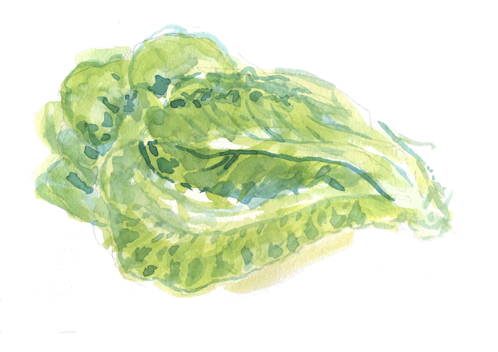
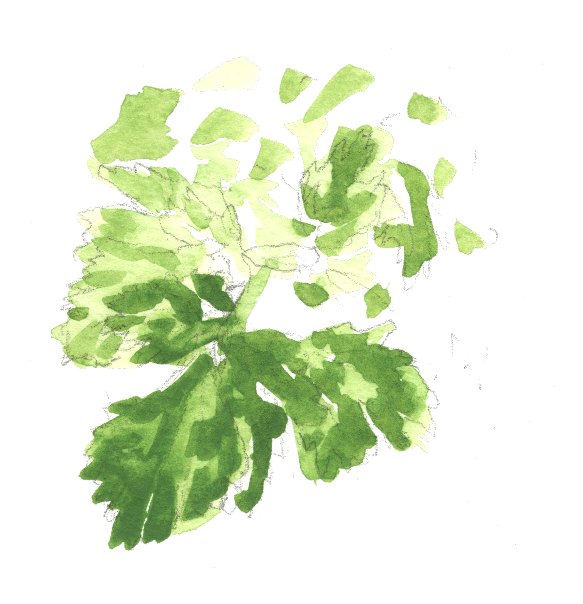
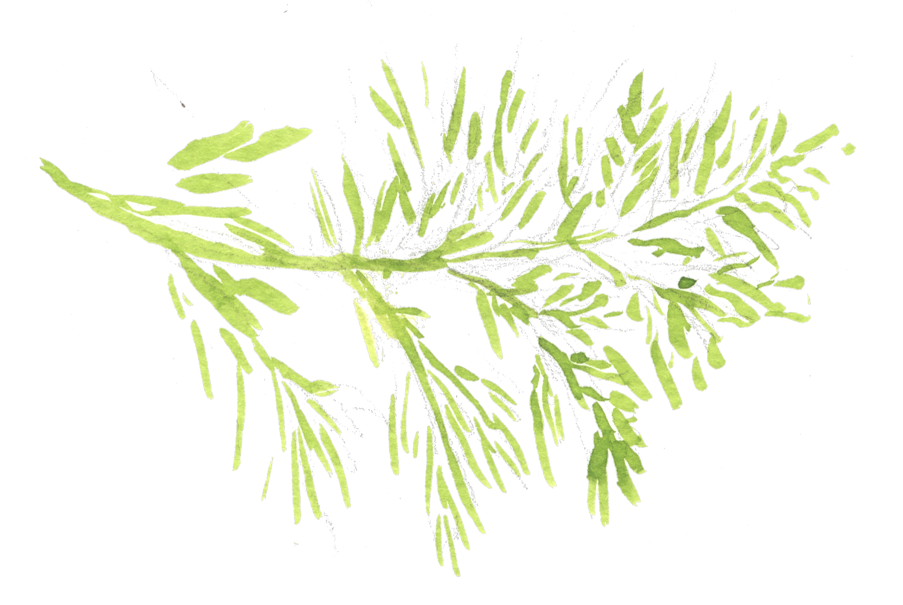

ספר הגידולים החי ב־sfa.nimrod.bio/crop-book/ מקבל 14 מחשבונים. אותם נתונים — שני קהלים, שלוש רמות עומק, וכלי תכנון אמין שמודה בכנות איפה הוא לא יודע. כל הרכיבים מרחיבים את ה־kit הקיים (AOS DS v3.4 · ווטרקולור · Carmela · RTL).
A pannable spec board. Hebrew = production UI copy · English = design annotations for cross-team routing. Calculators & AssumptionFields are live — type in them. Frames carry data-screen-label.
One persistent switch. Cards = home gardener / course student (default for /crop-book/) — visual, per-crop, surfaces calculators #1·2·4·5·8·10·11. Table = small farmer — dense, sortable, exposes calculators #6·7·9·12·13 inline per row. Same crops, same data — not two products. A filter rail on the same page (family · season · sow-vs-transplant · frost · DTM · completeness) narrows the list in place — search and results together, never a separate screen.
data-screen-label="book/"



● = calculators enabled on this crop · dim = disabled (a required field is missing)
value_best — the difference is template + density only.A toggle on the crop page — never a different URL. All three depths are organized by subject (משתלה · תהליך גידול · קציר ואחסון · יבול · תשומות) so the page reads as a plan, not a data dump. Simple = headline values + a per-topic summary. Full = every mandatory field, grouped into collapsible topic sections. Drill-down = a variety-comparison table (with averages) + a full per-source reference sheet at JMF-MasterClass depth, organized by topic. The one winning value is always shown up front; the hierarchy lives in Drill-down. Worked crop: חסה (lettuce) — a COMPLETE book.
data-screen-label="book/lettuce/" completeLactuca sativa
המחשבון המלא (כל המודולים יחד + סיכום + ייצוא) הוא עמוד נפרד — מחשבון ›
value_best; switch the source tab in Drill-down to read any one source in full.One reusable card: title + the book values it reads (each with the ↗ ספר cross-link from CalcField §11) + user inputs + the result, all with units. In the crop page the small calculators are buttons that open this card as a module overlay over the page (the full multi-calculator page is separate, §2.3b). Each calculator is a self-contained module — the basis for the future system. Below: the disabled state (a required field is MISSING), the grouped seed→sow→nursery sequence, and the visual population layout (#10).
זרעים מאבדים חיוניות עם הגיל. זרע מלפני 3 שנים? הורידו ל־70–75% והמערכת תגדיל את כמות הקנייה אוטומטית.
קראו עוד · התיישנות זרעיםvalue_best, cross-linked). Teal = AssumptionField (default + override). Plain box = user input.אנחנו מתרגמים את ה־30″ של JM Fortier ל־80 ס״מ (ולא 75) — סטנדרט אחיד לכל הספר. ערוגה רחבה יותר? עדכנו כאן.
קראו עוד · גאומטריית ערוגהrequest info. Only a MISSING book field disables — never an AssumptionField or user input.The /calc/ module is a dashboard: one shared context (crop + area + target date) drives every calculator, and each calculator is an independent module card in a grid. Modules feed each other (#1 → #3) and feed a single summary (cost · yield · revenue · profit). One export writes the whole plan to PDF / CSV. The code mirrors this 1:1 — calculator modules + a dashboard that composes them.
data-screen-label="calc/"data-calc); the /calc/ page = a dashboard that mounts the modules and aggregates the summary. Modules also embed standalone inside crop pages (§2.3).team_00 directive: a planning assumption is never a silent constant. Four parts, all accessible: (1) default value · (2) inline override · (3) an attractive when/why/how explainer · (4) a "read more →" link to a nimrod.bio post. Two states: collapsed (default + edit affordance) and expanded. First launch instances: germination_rate (90%) and bed_width (80 cm) — both must ship with a published explainer + link.
לחצו ✎ לפריסה…
לחצו ✎ לפריסה…
אחוז הנביטה יורד ככל שהזרע מתיישן ולפי תנאי האחסון. זרעים טריים מהשנה — 90% ומעלה. זרעים מלפני 2–3 שנים — בדקו נביטה (10 זרעים על נייר לח) ועדכנו כאן; המחשבון יגדיל את כמות הקנייה כדי לפצות.
④ קראו עוד · התיישנות זרעים ומבחן נביטה8 registered assumptions (config registry, not per-crop columns): germination_rate · bed_width · oversow · tray_cells · std_bed_length_m · hardiness_offset · compost_N_pct · application_efficiency. Same component, same four parts; only germination_rate & bed_width are launch-blocking on content.
A COMPLETE crop is trustworthy: clean values, all calculators on. A PARTIAL crop degrades honestly — no silent gaps. Four cues, defined once and reused everywhere: the asterisk (+tooltip) on unvalidated/web-sourced values, the "—" + request-info on missing values, and the disabled calculator when a required field is missing.
EX/NI override or confidence ≥ τ (0.50). Plain value, calculators enabled.
Asterisk + hover/focus tooltip. Calculators stay on but flagged. (hover the *)
No enrichment row. "—" + request-info CTA → community/Nimrod feedback loop.
seeds_per_gramOnly a MISSING field disables (not merely unvalidated). Names the field; promises re-enable.
data-screen-label="book/radish/" partial.gj-* mobile / .dt-* desktop swap at 900px.A small informational chip derived from the botanical family — not a calculator, no inputs. The gap count is the rotation_gap_seasons AssumptionField (default 3). A stable hook for the future Planner's bed-rotation logic.
Informational only this WP — a richer companion-matrix model is deferred to Planner/Tasks (CB-2/CB-3). The chip is a deliberate, stable entry point for it.
Mockups above embed into LOD400 §10. The written deltas extend the existing kit (do not restyle from scratch) and ship beside this file.
AssumptionField · CalcPanel · provenance cues · rotation chip · audience switch · depth tabs
confidence/provenance + AssumptionField color tokens · Carmela wordmark face
depth param · audience param · calc partials · macro contracts
for team_100 / team_00 before L-GATE_S
team_35 (Design Studio) · LOD300 → team_100 → LOD400 §10 → L-GATE_S (team_190). Brand: AOS DS v3.4 · watercolor (Devora masters) · Carmela · RTL Hebrew · Slim4/PHP server-rendered + light JS.